Q1–Q4 独立 Nature 图组
按论证链组织的多面板科学图。冻结条件模型；范围、统计与局限见每张图注。
Q1_01 · 评分在固定规则内可复现，但聚合规则和尺度不能当成人工真值。
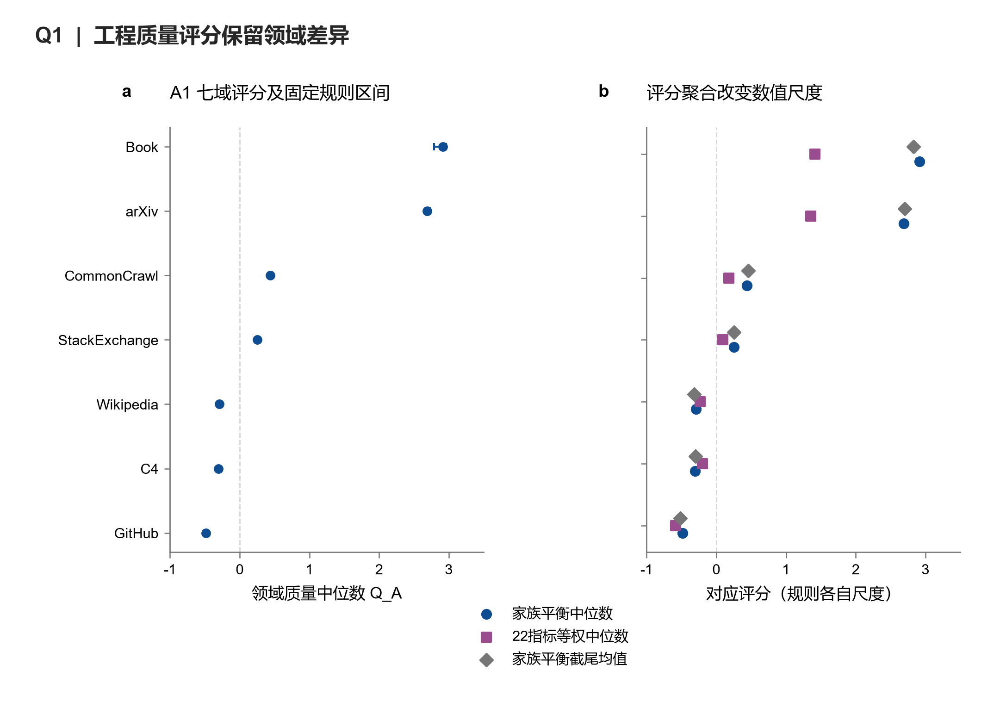
a，A1 51,230条记录的七域中位数；横线为发布表中固定评分规则的抽样区间，未覆盖方法选择不确定性。b，同一七域的三种汇总口径，只用于规则比较，不能解释为同一标尺的独立测量。A2/A3使用冻结规则，扩展全集中位数2.7253/−0.5055，去重值2.7279/−0.5063。
PDF · SVGQ1_02 · 复制性指标分歧支持二维评分和人工复核，而不支持自动判定文本错误。
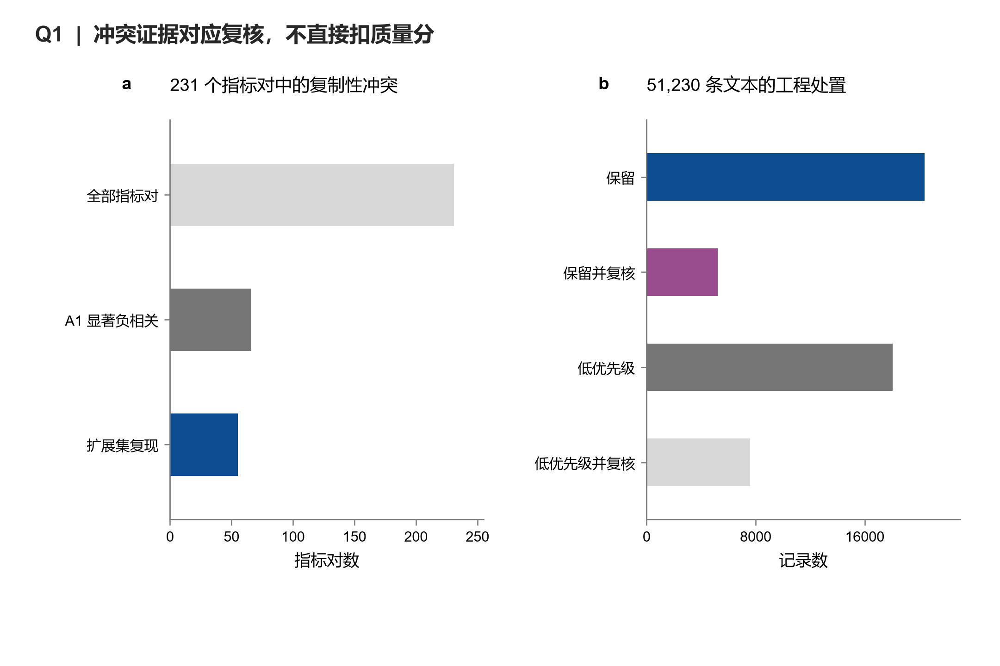
a，22指标共231对；分范围BH-FDR=0.05，A1 66对显著负相关，55对在去重扩展集复现。b，Q_A阈值0.0273、分歧D第75百分位阈值2.0423下的处置计数；高分歧不扣Q_A。27个案例不是人工质量标签，没有准确率检验；分布四象限的D中位数不得替代复核阈值。
PDF · SVGQ1_03 · 逐目标配对比较支持交互代理优于线性基线，但已观察检验不能称为盲测。
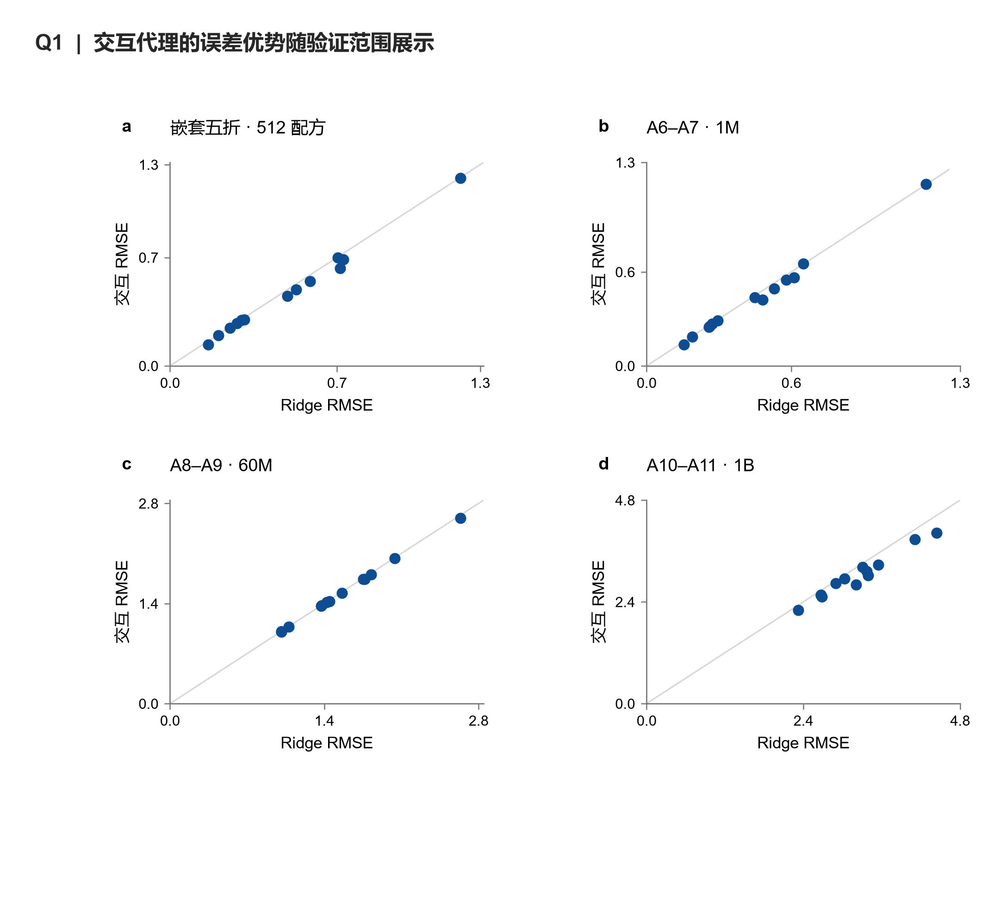
a–d，每点为一个目标域，n=13；对角线表示两模型RMSE相同。嵌套五折13/13更低；1M、60M、1B分别11/13、13/13更低。A6/A8共享256配方；检验组曾用于形式判断。1B 47/64配方超出A4凸包。这里只核对冻结结果，不把相关性、误差或同配方计数当作独立训练重复。
PDF · SVGQ1_04 · 不同政策给出不同条件配方，数值精度和训练扰动稳定性必须分别报告。
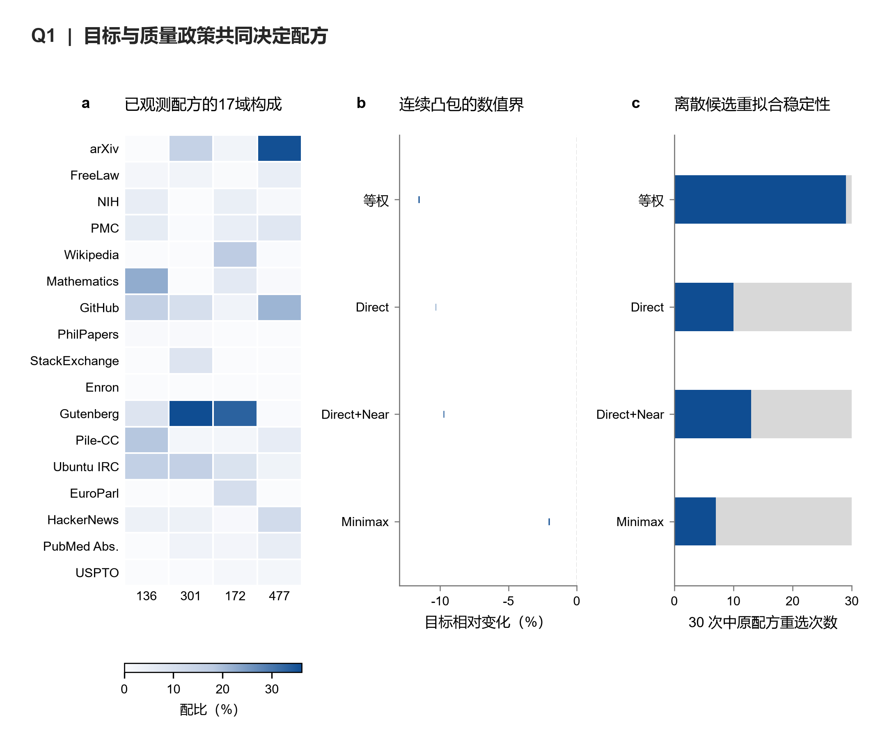
a，512个观测候选中的136/301/172/477，仅是有限集最优，非连续凸包解编号。配比列全部17域，无隐藏列。b，四种目标的浮点下界与可行上界，间隙均<0.001，不是统计区间或严格数学证书；Minimax与等权目标含义不同。c，30次无放回80%行重拟合，原候选重选29/10/13/7次；灰段为其他候选，无置信区间解释。
PDF · SVGQ1_05 · 目标域响应不同，估算大模型表不能支持配方排序无条件外推。
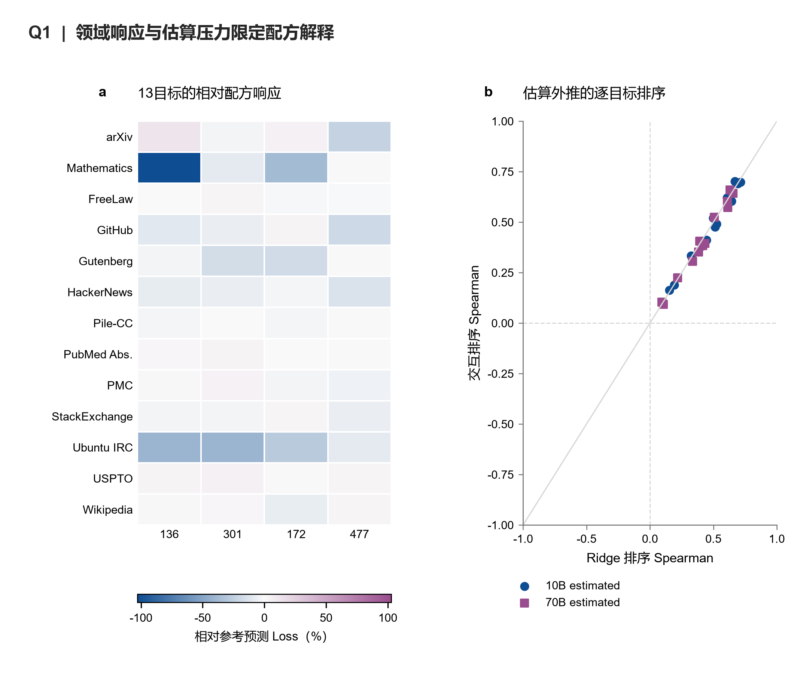
a，从冻结13目标模型复算四个已观测候选相对参考响应，非观测干预；域间绝对Loss不同，使用各自参考归一化。诊断发现Mathematics在136处预测Loss为负，表明代理的绝对物理解释有局限，未裁零或修复。b，两组各13目标、63配方的estimated排序；交互中位相关0.4915/0.3941，低于Ridge 0.5136/0.4148。两模型选16，在估算表均排61/63；这些不是10B/70B真实训练验证。
PDF · SVGQ2_01 · 冻结解析骨架与半合成质量扩展可在共同支持域内计算条件响应。
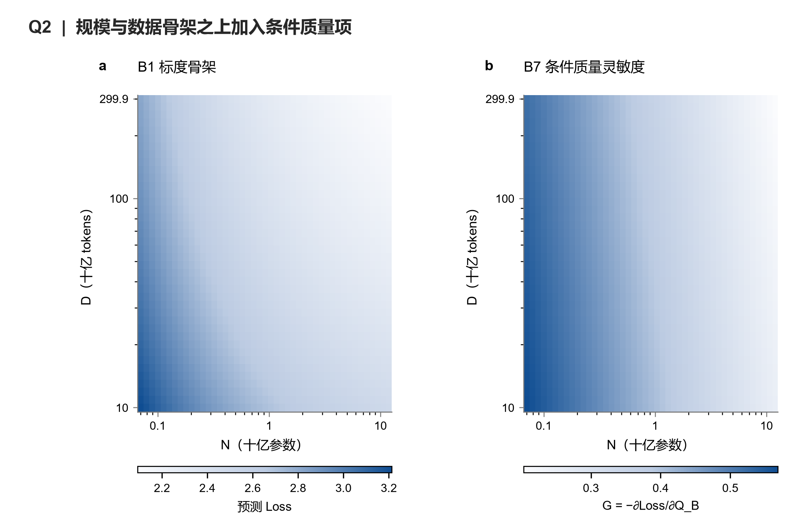
a，L0=E+AN^(−α)+BD^(−β)，B1 1176条同源Pythia记录，N/D以十亿计。b，LB=L0+(1−QB)G，G为450条半合成B7在固定B1骨架上的三参数扩展。每格为解析计算，不是重复实验或新的拟合。绘制范围为正式共同N/D支持矩形，不外推。
PDF · SVGQ2_02 · 半合成同源的划分检验支持条件形式，不能替代跨附件真实质量干预。
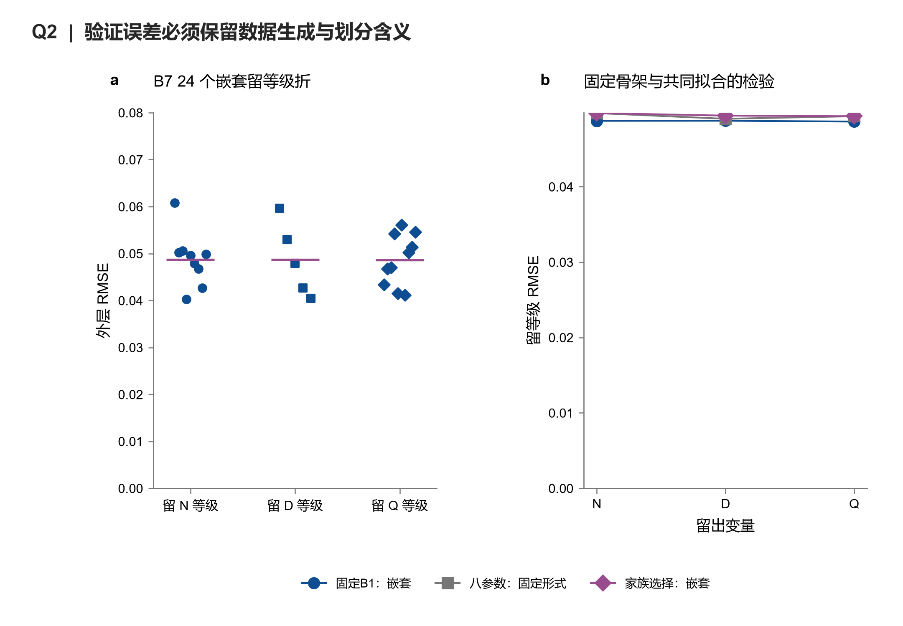
a，每个点为一折，横线为相应轴折均值，平均RMSE 0.048738/0.048751/0.048639；折共享数据，不视为独立重复。b，冻结对照表的外层留等级误差；缺失项表示上游未给出对应外层结果，不补零。B1留一规模组约1.46e−4仅支持同源重构；B6/B7重叠。
PDF · SVGQ2_03 · 固定配方的条件计算支持质量—规模替代，不证明质量可独立操控。
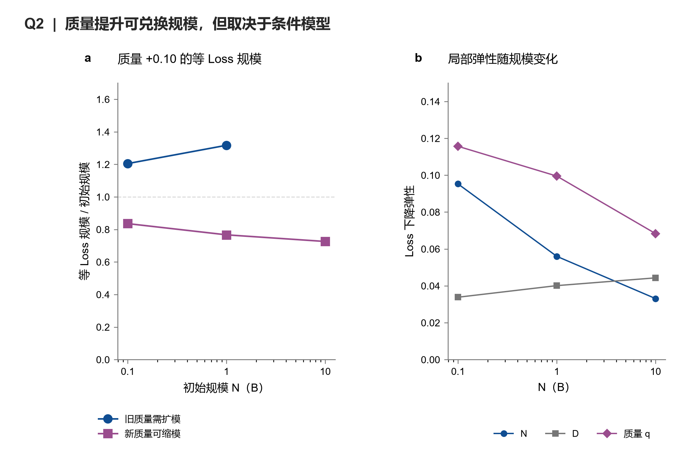
a，D=100B，固定示例配方，对原始三档N逐行计算；N=1B时提高质量0.10，旧质量等效需1.317062B。b，冻结局部弹性示例，均无统计区间。q(p)由配方决定；额外处理可控QB是另一工程机制，不把两机制混同。
PDF · SVGQ2_04 · 领域作用依赖补偿方向与桥强度，不能从环境交叉偏导直接判因果互补。
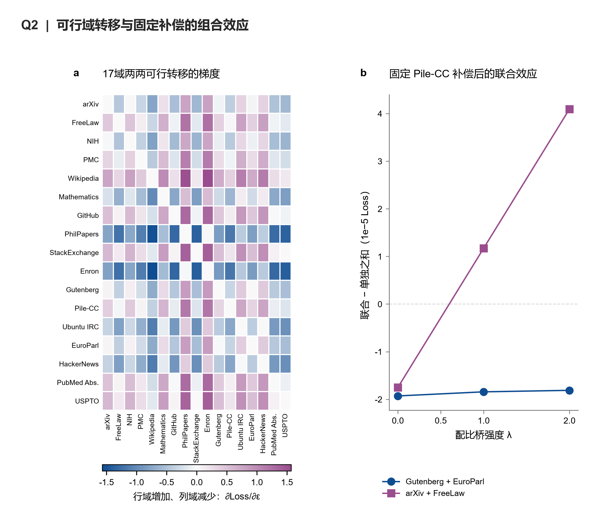
a，A4平均配比处全部136对可行局部转移；转移矩阵反对称，对角为不转移。方向限凸包可行步长，未独立标定质量桥。b，固定Pile-CC补偿、各域+0.005后的联合对比；负值是该操作下互补，正值是替代。λ=1为−1.844e−5/+1.172e−5；arXiv/FreeLaw在λ=0翻号。确定性假设诊断，无置信区间。
PDF · SVGQ2_05 · 轨迹、同族方向与桥压力分别支持有限结论，不能合成为真实跨族绝对精度。
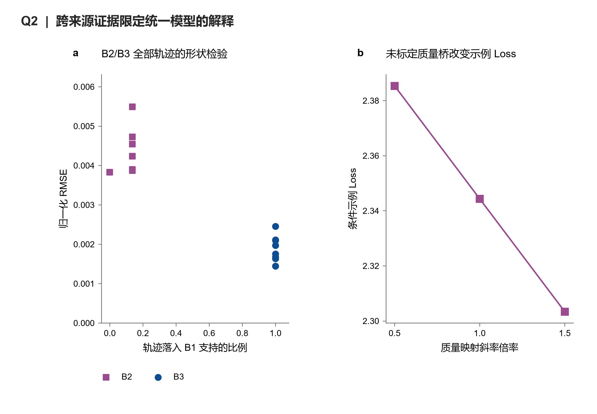
a，15条曲线各一点评估；B2/B3用于轨迹形状及插值一致性，不是独立同Loss坐标外测。B4/B5支持内同族方向12/12与7/7，不能辨别多数单调模型。B10 128条estimated记录全部超过B1规模上界，不作真实验证。b，三种确定性桥假设示例2.385343/2.344348/2.303352；没有A/B成对标定或统计区间。
PDF · SVGQ3_01 · 低预算受到上下文成本约束，高预算受到支持上界约束。
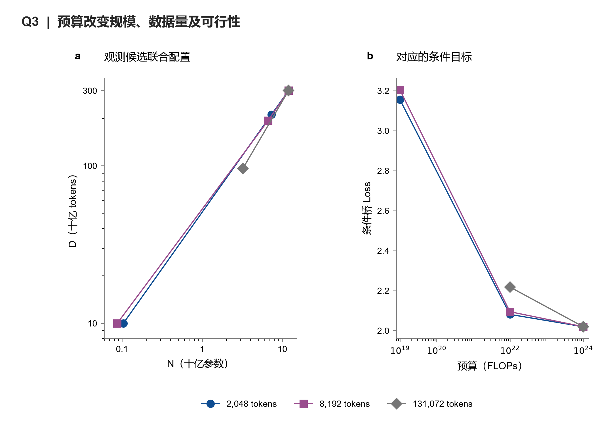
幂成本、Q0=0.5、87个满足质量约束的观测候选，官方预算10^19/10^22/10^24。线仅连接有序预算配置；131072上下文在低预算不可行，未补零。高预算N/D达到共同支持上界，不能解释为真实最优停止扩张。全部为条件模型优化。
PDF · SVGQ3_02 · 长上下文提高注意力成本，成本形式改变可负担的配置。
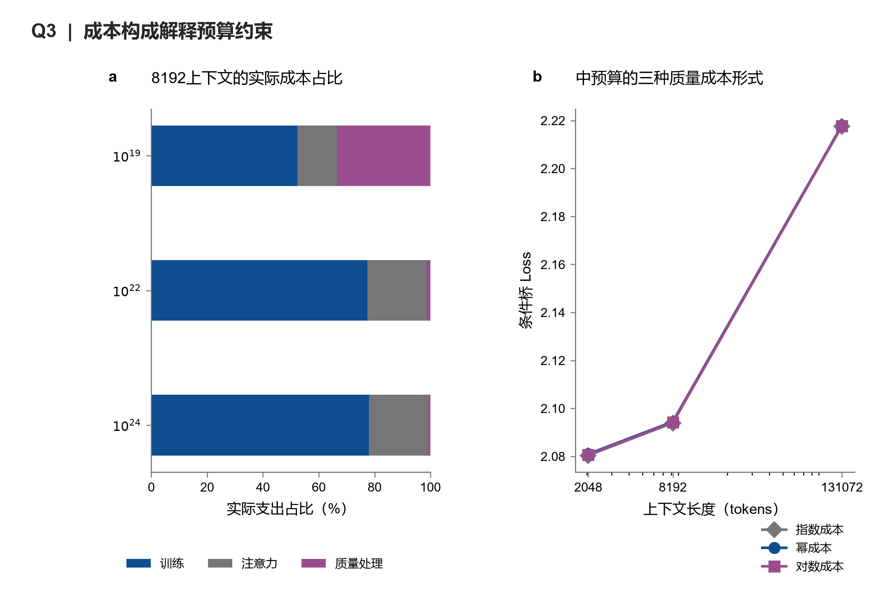
a，分母是实际C_total，不是预算；10^24预算利用率约2.76%，不能把未花预算算成成本份额。b，固定10^22预算，各点分别优化其候选配方和N/D。成本函数属于题设工程假设，没有观测重复或误差区间。
PDF · SVGQ3_03 · 配方跳变是有限候选切换，独立质量处理的转折是另一模型机制。
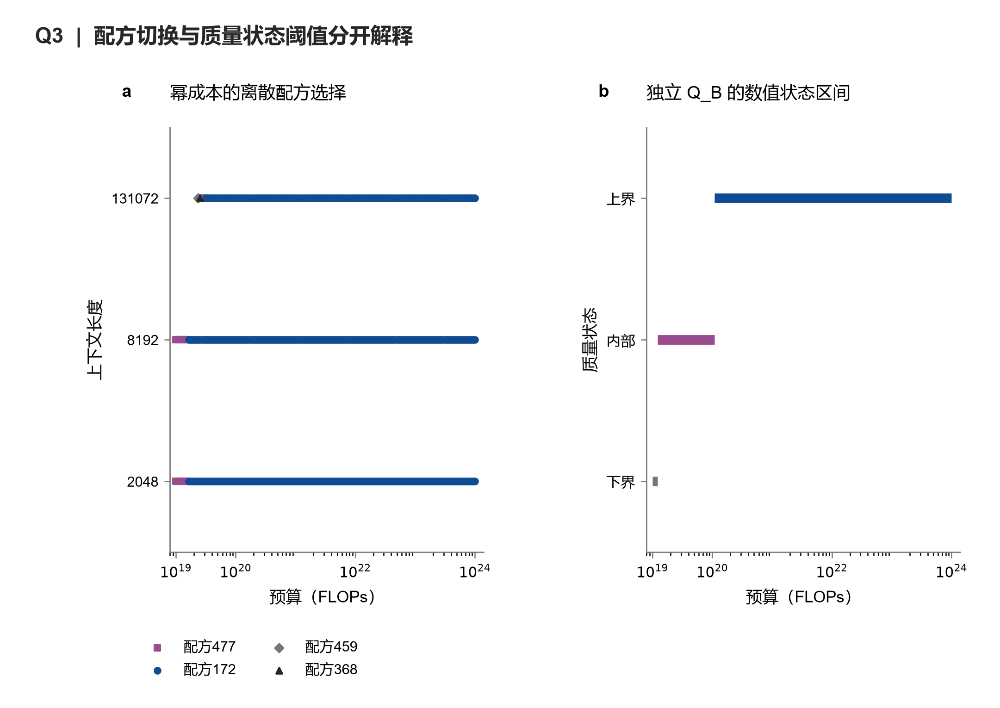
a，161个对数预算点，三上下文，幂成本；空白表示不可行。不连接无序配方编号。b，固定172、8192上下文，native Q_B转折位于[1.22887598,1.22896234]×10^19和[1.08599453,1.08607084]×10^20；横线为数值状态范围，不是置信区间，边界相对宽度7.03e−5。不得称为真实训练相变。
PDF · SVGQ3_04 · 跨附件桥假设直接影响决策，不能只展示单一基准。
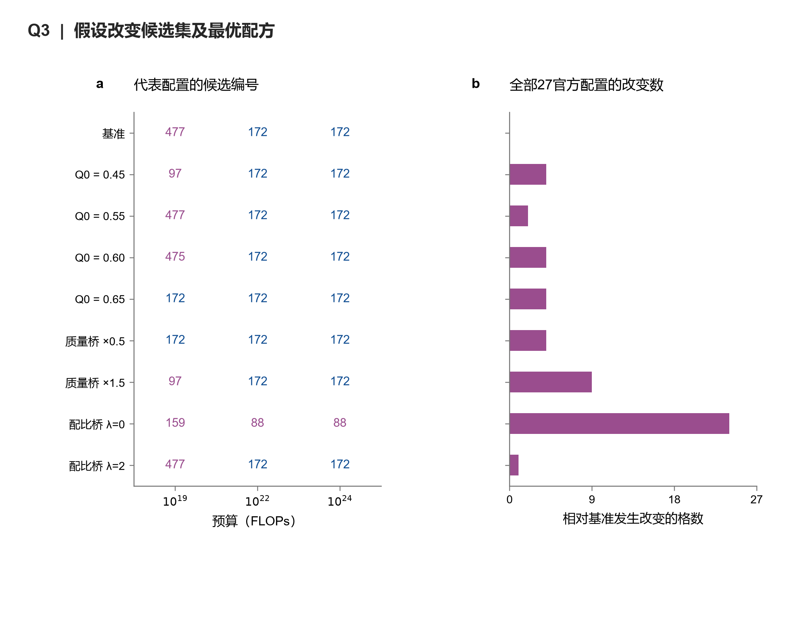
九种预先给定工程情景，共243=9×27官方配置；a固定幂成本、8192上下文，仅编号展示类别，空白不可行。b合并可行性与配方改变，分母27，非重复实验。桥斜率、λ及Q0没有真实成对标定；这些范围不是概率或置信区间。
PDF · SVGQ3_05 · 独立质量处理是声明机制的敏感性分支，不能替代观测配方证据。
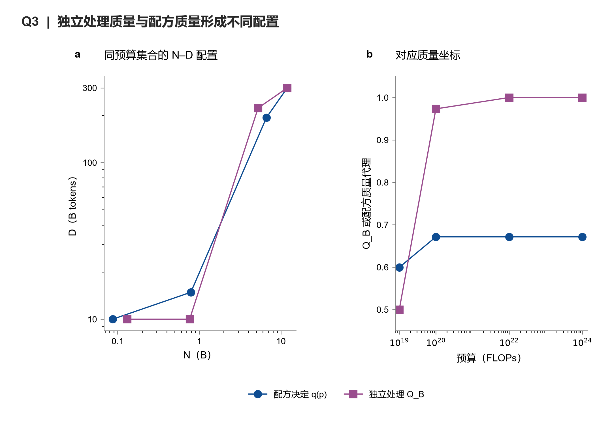
8192上下文、幂成本，官方三预算及10^20诊断预算。线连接四个有序离散预算，不推断连续路径。独立处理固定172配方，QB可在0.5–1优化；配方代理来自未标定A→B桥。native低预算QB=0.5、中高预算接近1；两分支都为条件计算。
PDF · SVGQ3_06 · 外部训练支持N–D排序及受限选择，尚不验证完整N–D–Q–配比机制。
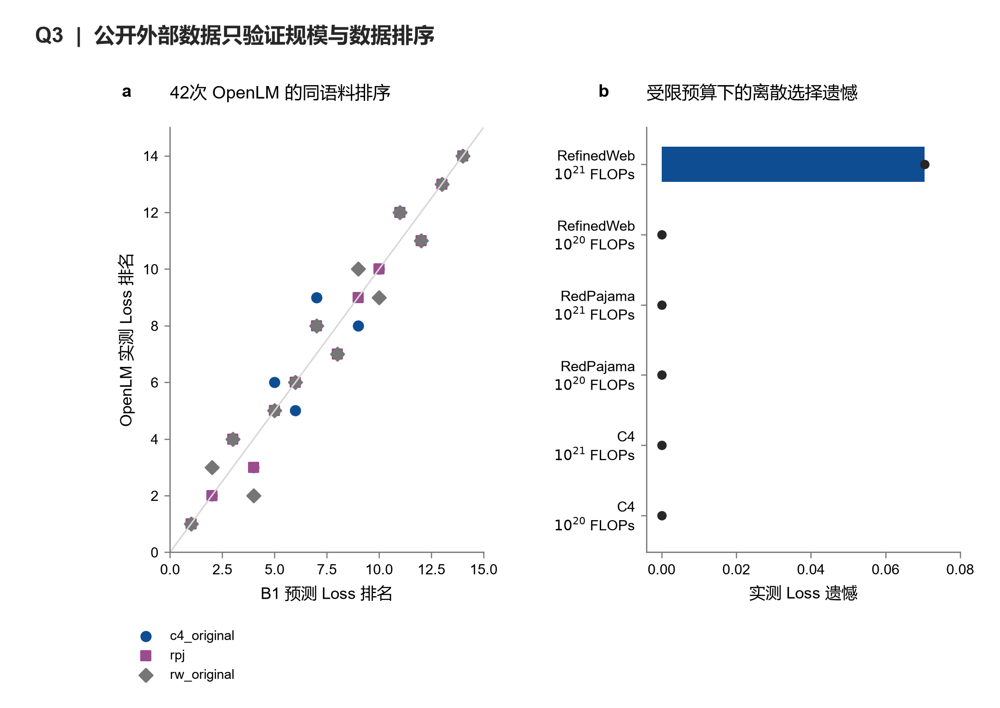
a，三语料各14次真实公开训练，使用各语料内秩，不比较跨坐标绝对Loss。Spearman约0.9736/0.9868/0.9736。b，只保留10^20和10^21训练成本预算，6组中5组零遗憾；RefinedWeb另一组0.070515。仅训练成本、离散候选，不含质量、配方或注意力干预。
PDF · SVGQ4_01 · 同规模时间变化解释部分历史上升，但没有识别纯技术因果效应。
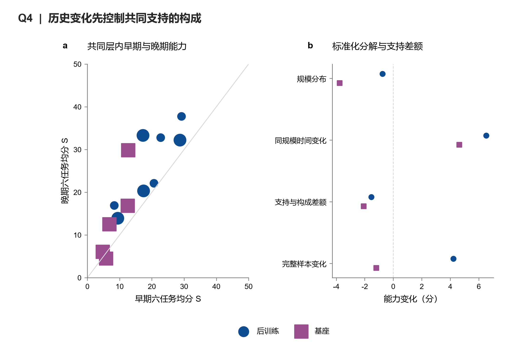
主要过滤、首末各2个月、0.5 decade规模分箱，不控制开发者。a每点为共同层均分，面积反映层权重。b后训练规模−0.7579、时间6.5212、差额−1.5415，基座−3.7557/4.6356/−2.0716；前两项是标准化变化，第三项合为全样本变化。开发者控制仅保留极少记录；未排除数据量、选择或评估混杂，不使用因果术语。
PDF · SVGQ4_02 · 后训练的分位资源形式短期误差较低，基座常数形式更稳，但各模型R²仍为负。
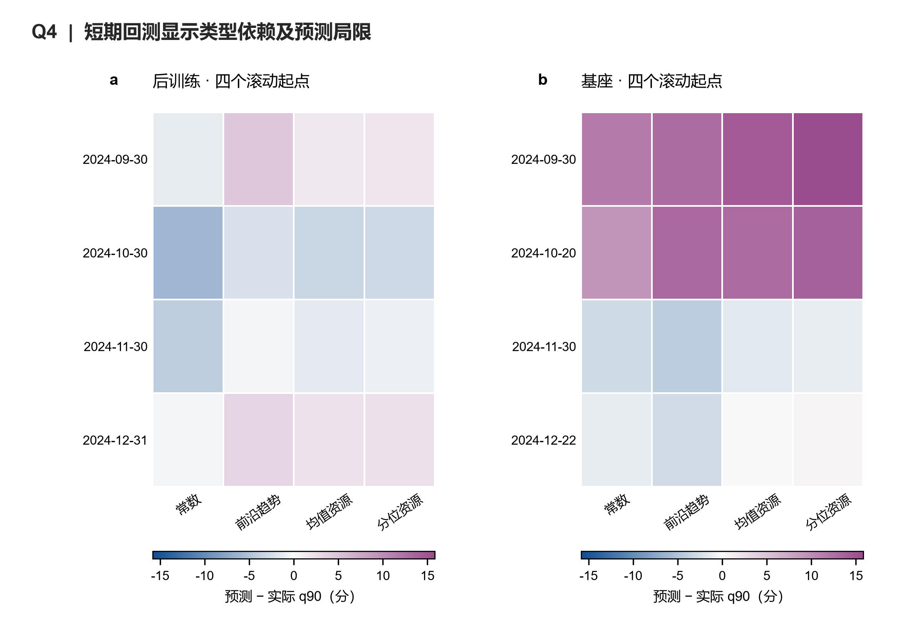
每格是一个起点的未来2个月残差，各模型同4窗口；不是独立训练重复，不给显著性或覆盖率结论。后训练RMSE2.1992，基座常数7.6331，基座分位资源10.561；形式选择和检验共享短期数据。12/24个月情景不由此获得长期准确性保证。
PDF · SVGQ4_03 · 最高纪录需要尾部假设；情景范围没有长期预测覆盖率保证。
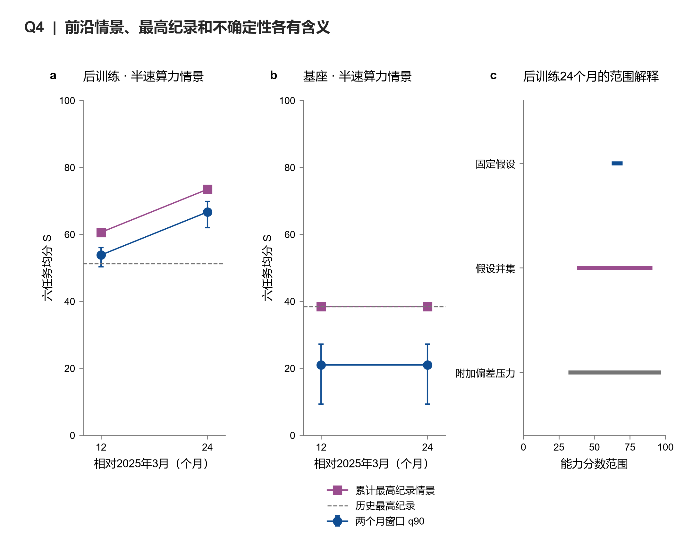
预测起点固定在2025年3月，不是当前日期。半速算力下后训练12/24个月q90为53.8278/66.6810，最高纪录情景60.6000/73.4532；基座q90约21.0319而累计纪录保持38.441。q90细线为固定假设5–95%条件自助范围；紫线累计最高加入尾差，不能当同一统计目标。c仅后训练24个月，范围61.9828–69.8046、37.7548–90.6216、31.5900–96.7864；不是置信区间。四回测窗口无新纪录，纪录延续基线RMSE=0，尾差动态尚未验证优于它。
PDF · SVGQ4_04 · 来源内映射可诊断，Q3 Loss到能力的跨来源坐标仍未识别。
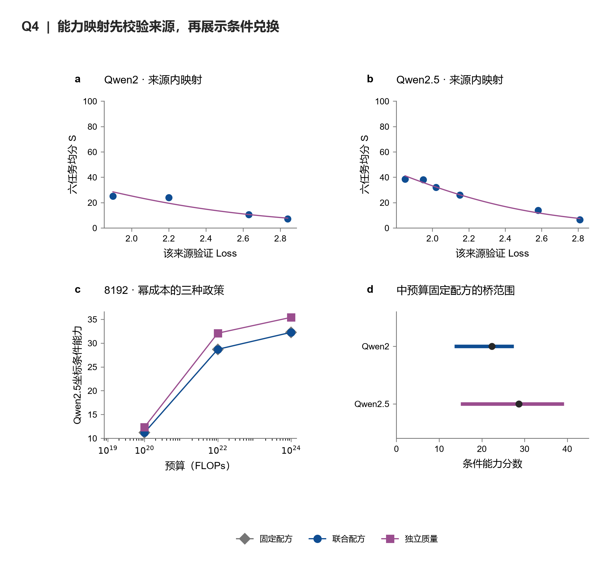
a/b分别n=4/6，点为C6记录，曲线为冻结logistic映射，不跨Loss坐标混拟合；留一RMSE7.0475/2.6553，比常数10.7083/15.0745低。Pythia映射不优于常数，排除为主桥。c，缺失表示无支持或不可行，不补零；固定与联合在支持预算均选172而重合。d，27种确定性坐标及上游压力组合的支持内范围，22/23种支持；黑点为名义桥。不是统计区间、真实能力训练结果或未来前沿预测。
PDF · SVGQ4_05 · 不同附件任务、年代与门控不能直接拼成统一能力曲线。
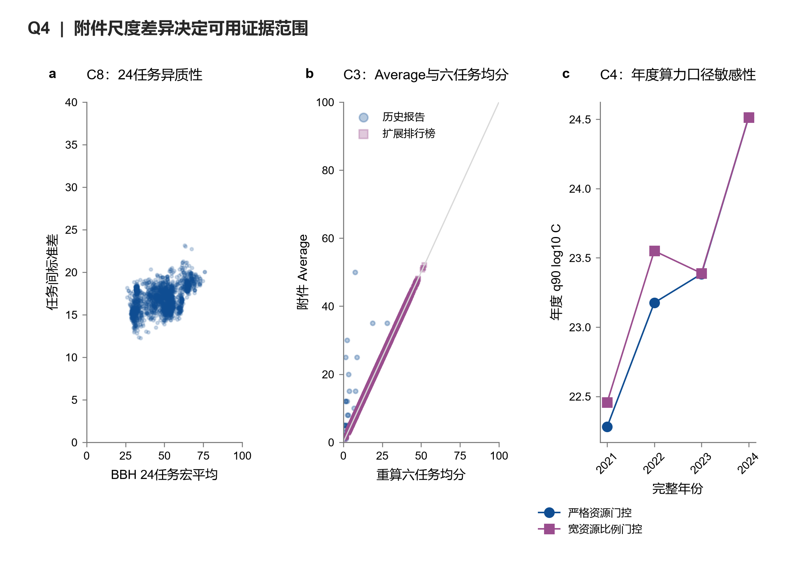
a，1860个成功解析结果各一点，24任务等权；标准差是任务差异而非模型均分置信区间，4个解析失败单列。b，4599行全列，混合来源只核对指标，不作为同口径时间轨迹；26历史行Average与六均分绝对差均值9.101。c，只画2021–24完整年份，两门控年度资源增长倍数4.901/3.986；严格样本81、宽口径93。未改写原始附件。
PDF · SVG